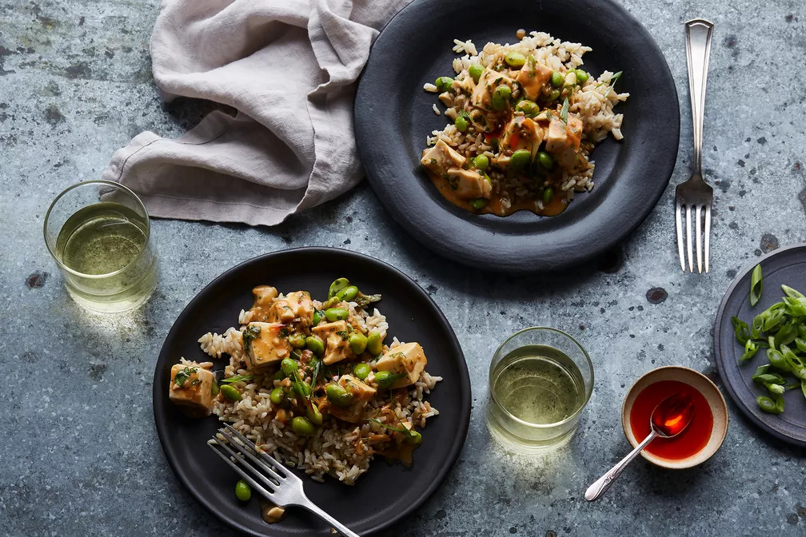
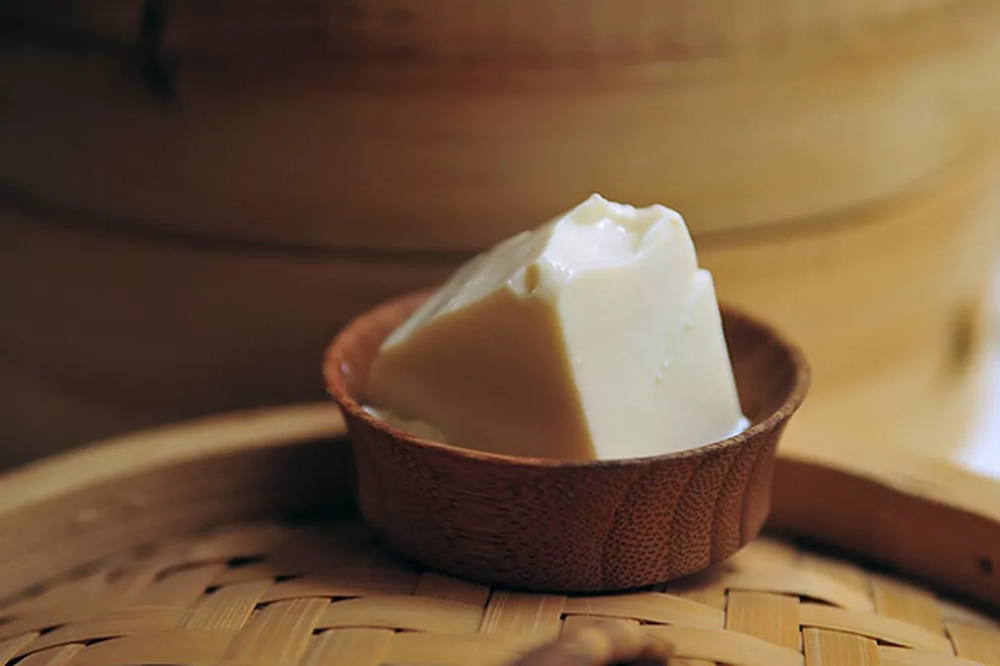

Homepage
Introduction
Recipes and Menus
Nutritional Value

Tofu can be used in both savory or sweet dishes, acting as a bland background for presenting the flavors of the other ingredients used.

Soft tofu can also be broken up or mashed and mixed with raw ingredients prior to being cooked.